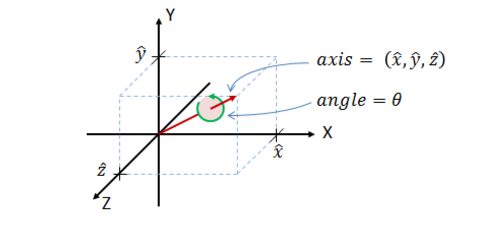

4 · Mathematical Formulation
The thrust-vector-controlled rocket is modelled as a rigid body with five active degrees of freedom (5-DOF). In other words, the rocket can translate in three axes (X, Y, Z) and rotate about two axes (pitch and yaw), while roll motion is assumed negligible. The rotational and translational dynamics are tightly coupled via the rocket’s changing orientation and inertial effects. The following differential equations capture the core non-linear equations of motion for this 5-DOF system:
q̇ = ½ q ⊗ ω
v̇i = Fi / m
ω̇ = J⁻¹ (τ − ω × Jω)Here, q is the unit quaternion representing the rocket’s orientation (with time derivative q̇), ω is the angular velocity vector in the body frame, vi and Fi are the rocket’s velocity and total force in the inertial frame, m is the mass, J is the inertia matrix, and τ is the total torque in the body frame. These non-linear equations (Newton’s second law for translation and Euler’s rotation equation) form the basis of the simulation’s dynamics. In the simulation, they are integrated at each time-step to update the rocket’s state (position, velocity, attitude, and angular rate). We will later see how simplifying assumptions are applied to reduce their complexity.
4 · The Rocket Problem
4.2.1 Simulation Requirements
Before diving into simulation design, it is essential to consider the requirements of the simulation with respect to the end goal: to provide a sandbox environment in which a multitude of tests can be orchestrated so that consistent and reliable data can be extracted to capture the most considerable contributions of dynamics, that can be refined in future. Integral to this discussion is the scale of the rocket, which dictates its performance and ultimately the bounds of its translation. Orbital rockets, like the European Space Agency's (ESA) Ariane 5 rocket, must consider centrifugal forces and the Coriolis effect (perturbations due to the rotation of the Earth and motion relative to its frame) as well as substantial mass variation as the immense fuel tanks are spent during launch. The hypothetical rocket used throughout this thesis will be much smaller: on the scale of a model rocket, which allows for various assumptions outlined in the next section. The simulation dynamics will also rely on the manoeuvres to be tested. For this thesis, the rocket will follow sequential pitch and yaw diagonal turns, necessitating accurate aerodynamic forces and moments in their respective planes. Finally, the simulation should be able to be validated against a verified simulation, Openrocket.
4.2.2 Assumptions
Model rockets, typically used for recreation and minor experiments, are designed to resemble the assumptions used to analyse their flight. The imperative is to find a balance between model accuracy and simplicity that satisfies the requirements for testing the control strategy. In this case, various assumptions were reasoned from the literature to build a model which still reasonably emulates the physics that would be expected, allowing the real emphasis to be put into the controller design. Furthermore, the assumptions can be dealt with in future for precision, once the controller dynamics have been analysed. Following standard assumptions in sub-orbital simulations, the rocket is modelled as:
- Rigid, axisymmetric airframe (no structural flex); roll dynamics are neglected.
- Mass m and moments of inertia are constant throughout the flight (no major mass depletion).
- “Flat Earth” kinematics – Earth’s rotation and Coriolis effects are ignored.
- Air density ρ is constant at 1.225 kg·m−3 (sea-level density).
- The solid rocket motor’s propellant mass is small, so the rocket’s total mass is treated as constant.
- A lateral wind disturbance is modeled as a fixed sinusoidal wind profile (varying with altitude or time).
With the requirements and assumptions clearly laid forth, the scope of the simulation preordains that for the TVC to manipulate the orientation of the rocket, it is essential to conceptualise how the rocket would rotate in a simulation. Thus, it must rotate with respect to another reference frame.
Introducing Orientation Using Body and Inertial Frames
This paper entails the construction of a 5 Degree-of-Freedom (5DOF) simulation. These allow the rocket to translate in the typical X, Y, and Z axes; the final 2 degrees allow the rocket to rotate around its pitch, Y and yaw, Z axes. This adds complexity to the system; it is now necessary to define the axes with respect to which the rocket will translate and rotate. Firstly, the inertial frame, which corresponds to the stationary reference frame of the Earth, encompasses the second and final frame within the rocket's body, located at its center of gravity. The concept and naming convention are illustrated below
As force vectors need to be converted between frames depending on which frame they are calculated - for example, the aerodynamic forces are dependent on the relative velocity in the body frame - the unit quaternion method was chosen as a computationally efficient representation of orientation, avoiding issues that arise utilising Euler angles, such as gimbal lock. Angular velocities, w, are used to update the quaternion’s rate of change, ensuring accurate orientation tracking and transformation of vectors between the inertial and body frames. Although the concept of a 4D vector representing an orientation/rotation seems daunting, as explained in the Figure below, intuition can be developed through understanding axis-angles. Conceptually, each term represents the same aspect, but they differ mathematically.
Finding a robust mathematical representation is critical now that the coordinate systems have been clearly articulated.
Quaternion Transformation
A glance at the literature will yield three of the most common ways to represent a rotation/orientation of a vector - namely, Euler angles, Direction Cosine Matrices (DCM) and quaternions. The literature states that Euler Angles are unfavourable in many rocket problems due to the infamous gimbal lock that occurs when one of its rotation axes reaches 90 degrees, resulting in a loss of a degree of freedom. However, the reference trajectories for this thesis will render this an unreachable ambit. Furthermore, DCM (3x3) matrices have redundant components and result in larger computational loads: not ideal when optimising for speed.
Lastly, quaternions: a commonplace 4D vector in rocket control systems due to their computational speed (although storing four components compared to Euler angles' 3 components) and numerical stability. Curiously, using quaternions demands an awareness of the 'unwinding' phenomenon that leads to some positive quaternion representing the same orientation as its negative counterpart. Based on this review, a decision was made to proceed with quaternions due to their intuitive and computationally desirable use, especially considering numerical integration.
As the simulation progresses, for example, at each time step, aerodynamic forces need to be calculated in the body frame whilst wind is applied in the inertial frame. This demands that a relative velocity is computed and converted at every time step to calculate orientation changes. The relative velocity vector can be rotated to the inertial frame using the Equation below
v_i = q* ⊗ v_b ⊗ q
v_b = q ⊗ v_i ⊗ q*
Similarly, Equation vb shows an inertial frame velocity vector rotated to the body frame by reversing the positions of the quaternion and its conjugate:
v_b = q ⊗ v_i ⊗ q*
Where:
q = [q₀, q₁, q₂, q₃]T: Quaternion representing orientation,q* = [q₀, -q₁, -q₂, -q₃]T: Conjugate of the quaternion,⊗: Denotes quaternion multiplication.
Therefore, the vector in the body frame can be written as in Equation rvbi:
v_b = q ⊗ v_i ⊗ q* = Ri,b · v_i
Where Ri,b is the rotation matrix derived and expanded from the quaternion and its conjugate — shown in Equation qr1 [Markley, 2008]:
Ri,b =
[ [q₀² + q₁² − q₂² − q₃², 2(q₁q₂ − q₀q₃), 2(q₁q₃ + q₀q₂)],
[2(q₁q₂ + q₀q₃), q₀² − q₁² + q₂² − q₃², 2(q₂q₃ − q₀q₁)],
[2(q₁q₃ − q₀q₂), 2(q₂q₃ + q₀q₁), q₀² − q₁² − q₂² + q₃²] ]
The transpose of matrix Rb,i = Ri,bT performs the reverse operation, from body to inertial frame, and is displayed in Equation qr2.
Rb,i =
[ [q₀² + q₁² − q₂² − q₃², 2(q₁q₂ + q₀q₃), 2(q₁q₃ − q₀q₂)],
[2(q₁q₂ − q₀q₃), q₀² − q₁² + q₂² − q₃², 2(q₂q₃ + q₀q₁)],
[2(q₁q₃ + q₀q₂), 2(q₂q₃ − q₀q₁), q₀² − q₁² − q₂² + q₃²] ]
As the rocket's angular acceleration vector 𝜔̇ changes, consequently, the translational acceleration vector v̇ in the inertial frame is altered.
Describing the Relevant Non-Linear Physics
Coupled Differential Equations
Given the assumptions in Section Assumptions, the central equations of motion from Isaac Newton and Euler's laws can be used to calculate the rocket's translation and rotation. They can be written mathematically as in Equations Translation and Rotation [dos2023adcs, danielson2021spacecraft]:
Equation (Translation):
v̇i = fi / m
Equation (Rotation):
ω̇ = J⁻¹ (τ − ω × Jω)
Where:
v̇i: Acceleration in the inertial frame (m/s²),fi: Total force in the inertial frame (N),m: Mass of the rocket (kg),ω̇: Angular acceleration in the body frame (rad/s²),ω: Angular velocity in the body frame (rad/s),τ: Total torque in the body frame (Nm),J: Inertia matrix of the rocket in the body frame (kg·m²),ω × Jω: Gyroscopic term accounting for angular momentum coupling.
As the rocket is perfectly axisymmetric and therefore has only diagonal components in the inertial matrix J without losing significant accuracy. Moreover, due to the neglected roll rate, the rotational equation of motion can be reduced to Equation reduc:
ω̇ = J⁻¹ τ
Finally, the rate of change of the quaternion is given by Equation rocq:
q̇ = ½ · Ω(ω) · q
Where:
q̇: Time derivative of the quaternion, representing the rate of change of orientation,Ω(ω): Skew-symmetric matrix constructed fromω.
These differential equations make up the dynamic states for the control system to optimise along with the control inputs, but the rotation and translation are further perturbed by interference effects from the environment.
Aerodynamics: Squared Terms & Trigonometric Non-Linearities
Aerodynamic forces, which contribute to the coupled relationship between rotation and translation, depend on aerodynamic coefficients such as the normal force coefficient cₙ and the pitching moment coefficient cₘ. They are typically calculated by summing pressure distributions across the components using Slender Body Theory for low Angles of Attack, α, where low perturbations in airflow are assumed and result in linear behaviour [Barrowman, 1967].
As α increases, the perturbations and body lift effects become significant in the airflow, resulting in non-linear behaviour requiring approximate correction terms [Niskanen, 2013]. The contributions accumulate and average out over each component — the nose cone, cylindrical body, and fins — and are assumed to act at a singular location: the center of pressure (COP). These coefficients vary significantly with geometry. CFD (Computational Fluid Dynamics) can provide high-fidelity coefficients, but here, parameters are based on OpenRocket's technical documentation [Niskanen, 2013].
As the rocket is axisymmetric, cₙ and cₛ are functions of the angle of attack α and sideslip angle β, defined below and visualized in Figure alphaBeta [Chowdhury, 2012; Venkatesan, 2014]:
Equation (alpsid):
α = arctan(w / u)
β = arctan(v / √(u² + w²))
Where:
u: Velocity component along the body-frame x-axis,v: Velocity component along the y-axis,w: Velocity component along the z-axis.
These angles trigonometrically scale the intensity of the aerodynamic forces and resulting moments.
Aerodynamic Forces and Moments
The normal force fₙ, side force fₛ, and drag force f_d are given by:
Equation (forcess):
fₙ = q_dyn · cₙ · A_ref
fₛ = q_dyn · c_y · A_ref
f_d = q_dyn · c_d · A_ref
Where:
q_dyn = ½ · ρ · v₀²: Dynamic pressure,cₙ: Normal force coefficient,cₛ: Side force coefficient,c_d: Drag coefficient,A_ref: Reference cross-sectional area.
Neglecting roll rate, the resulting aerodynamic forces induce a moment depending on α or β around the pitch and yaw axes, as described in:
Equation (torque):
τ = q_dyn · c_M · A_ref · d
Where:
c_M: Resultant moment coefficient (includes pitch and yaw components),d: Reference length (airframe diameter).
The total moment coefficient is the sum of damping and direct moment terms:
Equation (summed):
c_M = c_m,damp + c_m
Equation (moment):
c_m = cₙ · d / l_ref
Where:
l_ref: Distance from COG to COP (moment arm).
As the rocket approaches apogee, angular velocity increases due to gravity turns. Without damping, this could cause unstable tumbling. The damping moment term is:
Equation (damp):
c_m,damp = 0.55 · (l_ref⁴ / A_ref) · (r_t / d) · (ω² / v₀²)
Where:
r_t: Rocket radius.
Combatting these aerodynamic forces and torques is the task of the TVC system, which manipulates thrust to stabilise and control the rocket.
Thrust Vector Control: Trigonometric Coupling of Translation & Rotation
The TVC system manipulates the orientation of the engine's thrust to actuate the desired forces and moments, shown in Figure TVCDynamics [Ferrante, 2017].
The forces generated by the TVC in the body frame can be — assuming no thrust misalignment from the COG — derived by breaking the thrust vector into its components.
Then, applying the lever arm between the thrust exit and the COG gives the equations according to the right-hand rule, as seen in Equation tvc_forces [dos2023adcs]:
Equation (tvc_forces):
fTVC = fT ·
[
cos(θ)·cos(ϕ)
−sin(ϕ)
sin(θ)
]
τTVC = rtvc × fTVC
Where:
rtvc: Vector from the center of gravity to the thrust vectoring nozzle (lever arm),fT: Thrust magnitude,θ: TVC pitch gimbal angle,ϕ: TVC yaw gimbal angle.
These equations and their couplings establish the simulation's non-linear dynamics. Once integrated into a dynamics function, they create the prediction mechanism inherent to MPC, the bedrock of the SCvx framework. Given the aim of this thesis, the next section will explore typical approaches to non-linear control and specifically rocketry, highlighting the challenges with real-time control that requires pinpoint precision, logically culminating in a discussion of SCvx.
References
- Serale, G., Fiorentini, M., Capozzoli, A., Bernardini, D., & Bemporad, A. Model predictive control (MPC) for enhancing building and HVAC system energy efficiency: Problem formulation, applications and opportunities. Energies, 11(3), 631, 2018.
- Goldsman, D., Nance, R. E., & Wilson, J. R. A brief history of simulation revisited. Proceedings of the 2010 Winter Simulation Conference, 567–574, 2010. DOI: 10.1109/WSC.2010.5679129
- Raychaudhuri, S. Introduction to Monte Carlo simulation. Proceedings of the 2008 Winter Simulation Conference, 91–100, 2008. DOI: 10.1109/WSC.2008.4736059
- Evans, G. E., & Jones, B. The Application of Monte Carlo Simulation in Finance, Economics and Operations Management. 2009 WRI World Congress on Computer Science and Information Engineering, 4, 379–383. DOI: 10.1109/CSIE.2009.703
- MATLAB. MATLAB. The MathWorks, Natick, MA, vol. 9, 2012.
- Doyle, J. C., Francis, B. A., & Tannenbaum, A. R. Feedback Control Theory. Courier Corporation, 2013.
- Stevens, B. L., Lewis, F. L., & Johnson, E. N. Aircraft Control and Simulation: Dynamics, Controls Design, and Autonomous Systems. John Wiley & Sons, 2015.
- Heermann, D. W. Computer-Simulation Methods. Springer, 1990.
- Rose, D. Rotation Quaternions, and How to Use Them. danceswithcode.net, 2015.
- Markley, F. L. Unit Quaternion from Rotation Matrix. Journal of Guidance, Control, and Dynamics, 31(2), 440–442, 2008.
- Danielson, C., Kloeppel, J., & Petersen, C. Spacecraft Attitude Control Using the Invariant-Set Motion-Planner. IEEE Control Systems Letters, 6, 1700–1705, 2021.
- Venkatesan, C. Fundamentals of Helicopter Dynamics. CRC Press, 2014.
- Barrowman, J. S. The Practical Calculation of the Aerodynamic Characteristics of Slender Finned Vehicles. 1967.
- Niskanen, S. OpenRocket Technical Documentation. Development of an Open Source Model Rocket Simulation Software, 11–13, 2013.
- dos Santos, P., & Oliveira, P. ADCS Design for a Sounding Rocket with Thrust Vectoring. Aerotecnica Missili & Spazio, 102(3), 257–270, Springer, 2023.
- Gregory, D. A. Specific Impulse and Mass Flow Rate Error. The 2004 NASA Faculty Fellowship Program Research Reports, 2005.